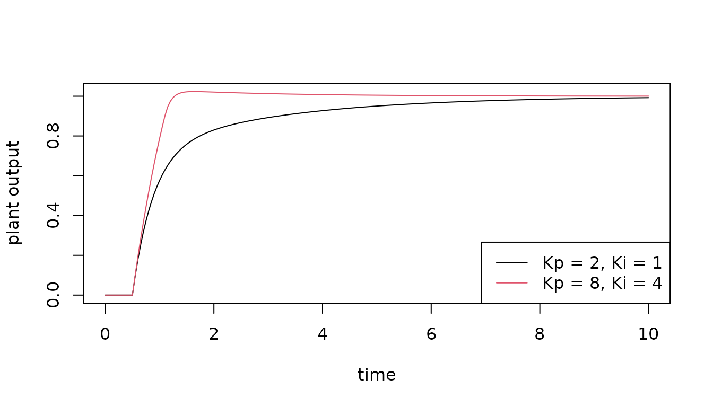

Feedback is the reason block diagrams exist. This vignette builds a reference, controller, actuator, plant and sensor loop, explains why the feedback through the plant is legal, and compares closed-loop responses.
A proportional-integral loop
The plant is a first-order lag G(s) = \frac{1}{s + 1}. The controller is proportional-integral, C(s) = K_p + \frac{K_i}{s}, built from blocks. The actuator saturates at \pm 2. Gains are model parameters so they can be changed without editing blocks.
loop <- sim_model("pi_loop", params = list(Kp = 2, Ki = 1))
sim_add_block(loop, "step", "reference", time = 0.5)
sim_add_block(loop, "subtract", "error")
sim_add_block(loop, "gain", "P", gain = sim_param("Kp"))
sim_add_block(loop, "gain", "Igain", gain = sim_param("Ki"))
sim_add_block(loop, "integrator", "I")
sim_add_block(loop, "sum", "controller")
sim_add_block(loop, "saturation", "actuator", lower = -2, upper = 2)
sim_add_block(loop, "transfer_function", "plant", num = 1, den = c(1, 1))
sim_add_block(loop, "gain", "sensor", gain = 1)
sim_connect(loop, "reference", "error", input = 1)
sim_connect(loop, "sensor", "error", input = 2)
sim_connect(loop, "error", "P")
sim_connect(loop, "error", "Igain")
sim_connect(loop, "Igain", "I")
sim_connect(loop, "P", "controller", input = 1)
sim_connect(loop, "I", "controller", input = 2)
sim_connect(loop, "controller", "actuator")
sim_connect(loop, "actuator", "plant")
sim_connect(loop, "plant", "sensor")
plan <- sim_compile(loop)
plan
#> <sim_plan 'pi_loop'> 9 block(s), 2 continuous state(s), 0 discrete state(s), 9 signal element(s)
#> Execution order: I > plant > reference > sensor > error > Igain > P > controller > actuator
#> Zero-crossing functions: 2; events: 0The loop
error -> P -> controller -> actuator -> plant -> sensor -> error
is closed, yet compilation succeeds. The plant is strictly proper, so
its output at time t is a function of
its state only; the cycle is broken by a state, exactly as in a physical
system.
Changing gains
sim_set_params() returns a new plan with different
parameter values. The dependency analysis is reused because the
structure did not change.
aggressive <- sim_set_params(plan, Kp = 8, Ki = 4)
aggressive$structure_reused
#> [1] TRUE
r2 <- sim_run(aggressive, c(0, 10))
matplot(sim_times(r), cbind(sim_signal(r, "plant"), sim_signal(r2, "plant")),
type = "l", lty = 1, xlab = "time", ylab = "plant output")
legend("bottomright", c("Kp = 2, Ki = 1", "Kp = 8, Ki = 4"), col = 1:2, lty = 1)
The aggressive controller saturates the actuator, which limits how fast the plant can respond:
range(sim_signal(r2, "actuator"))
#> [1] 0 2When feedback is not legal
If the plant were replaced by a pure gain, every block in the cycle would have direct feedthrough: the error at time t would depend on itself at time t. This is an algebraic loop and is rejected by default:
bad <- sim_copy(loop, "algebraic")
sim_remove_block(bad, "plant")
sim_remove_block(bad, "I")
sim_add_block(bad, "gain", "plant", gain = 0.5)
sim_connect(bad, "actuator", "plant")
sim_connect(bad, "plant", "sensor")
sim_add_block(bad, "constant", "zero", value = 0)
sim_connect(bad, "zero", "controller", input = 2)
sim_compile(bad)
#> Error:
#> ! Algebraic loop(s) detected: every block on the cycle has direct feedthrough, so the outputs depend on themselves at the same time.
#> P -> controller -> actuator -> plant -> sensor -> error -> P
#> Break the loop with a stateful block (integrator, unit_delay, ...) or compile with algebraic_loops = "solve".vignette("algebraic-loops") shows when and how such
loops can be solved.
Exact check: the regulated integrator
The simplest feedback system, an integrator with unit negative feedback, has the exact solution 1 - e^{-t} for a unit reference:
m <- sim_model("regulated")
sim_add_block(m, "constant", "r", value = 1)
sim_add_block(m, "subtract", "e")
sim_add_block(m, "integrator", "x")
sim_connect(m, "r", "e", input = 1)
sim_connect(m, "x", "e", input = 2)
sim_connect(m, "e", "x")
r <- sim_run(sim_compile(m), c(0, 10), times = seq(0, 10, 0.01),
rtol = 1e-10, atol = 1e-12)
max(abs(sim_signal(r, "x") - (1 - exp(-sim_times(r)))))
#> [1] 8.902844e-13